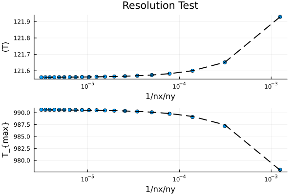

Poisson Problem (constant $k$)
This example performs a resolution test for the steady-state 2-D temperature conservation equation, i.e., the Poisson equation, assuming constant thermal conductivity $k$.
The maximum resolution is define by n*ncx x n*ncy, where n needs to be defined in the very beginning.
The temperature equation is solved for each resolution in a loop and the maximum and mean temperature is stored. In theory, increasing the resolution should asymptotically approach the exact solution of the problem.
For more details on the model setup and the physics or the numerical scheme, please see the exercise or the documentation
First one needs to load the required packages:
using GeoModBox.HeatEquation.TwoD, ExtendableSparse, Plots, Statistics
using GLM, DataFramesLet's first define the maximum resolution.
# Define the numer of differen resolutions ------------------------------ #
# Maximum resolution is defined as nx = n*40, ny = n*20 ---
n = 20Now, one can define the geometrical and physical constants.
# Physical Parameters --------------------------------------------------- #
P = (
L = 4.0e3, # [m]
H = 2.0e3, # [m]
k = 5.6, # Conductivity, W/m/K
# Define the region of the anomaly
Wcave = 200.0, # Width [ m ]
Hcave = 200.0, # Thickness [ m ]
Dcave = 1.0e3, # Depth of center [ m ]
Xcave = 2.0e3, # x-position of center [ m ]
Q = 0.3 # volumetric heat production rate [ W/m³ ]; Q = rho*H
)
# ----------------------------------------------------------------------- #Dirichlet boundary conditions are applied to all domain boundaries.
# Boundary conditions --------------------------------------------------- #
BC = (
type = (W=:Dirichlet, E=:Dirichlet, N=:Dirichlet, S=:Dirichlet),
val = (W=:0.0,E=:0.0,N=:0.0,S=:0.0)
)
# ----------------------------------------------------------------------- #The following parameters are initialized for the resolution test:
- the reziprocal resolution
- the maximum temperature
- the mean temperature
# Define statistical parameters for visualization ---
ST = (
x = zeros(n), # Reziproc resolution 1/nx/ny
Tmax = zeros(n), # Maximum temperature
Tmean = zeros(n) # Mean temperature
)
# ----------------------------------------------------------------------- #The loop over resolutions (k) is now initialized.
# Loop over the resolutions --------------------------------------------- #
for k = 1:nWithin the loop, the grid parameters are updated for each resolution.
# Numerical Parameters ---------------------------------------------- #
NC = (
x = k*40, # Gitterpunkte in x-Richtung, Spalten
y = k*20 # Gitterpunkte in y-Richtung, Zeilen
)
println("Run ",k,", ncx = ",NC.x,", ncy = ",NC.y)
# Initialize grid spacing ------------------------------------------- #
Δ = (
x = P.L/NC.x,
y = P.H/NC.y
)
# ------------------------------------------------------------------- #
ST.x[k] = 1 / NC.x / NC.y
# ------------------------------------------------------------------- #
# Generate the grid ------------------------------------------------- #
x = (
c = LinRange(0.0 + Δ.x[1]/2.0, P.L - Δ.x[1]/2.0, NC.x),
)
y = (
c = LinRange(-P.H + Δ.y[1]/2.0, 0.0 - Δ.y[1]/2.0, NC.y),
)
# ------------------------------------------------------------------- #The required fields are then initialized, and initial conditions are applied. For simplicity, a constant background temperature of zero is assumed.
# Initialcondition -------------------------------------------------- #
D = (
Q = zeros(NC...),
T = zeros(NC...),
)
# Heat production rate in the anomaly ---
for i = 1:NC.x, j = 1:NC.y
if x.c[i] >= (P.Xcave-P.Wcave/2.0) && x.c[i] <=(P.Xcave+P.Wcave/2.0) &&
y.c[j] >= -P.Dcave-P.Hcave/2.0 && y.c[j] <= -P.Dcave+P.Hcave/2.0
D.Q[i,j] = P.Q
end
end
# ------------------------------------------------------------------- #To solve the Poisson equation, one needs to define the coefficient matrix, the degrees of freedom of the linear system of equations, and the right-hand side.
# Linear System of Equations ---------------------------------------- #
Num = (T=reshape(1:NC.x*NC.y, NC.x, NC.y),)
ndof = maximum(Num.T)
K = ExtendableSparseMatrix(ndof,ndof)
rhs = zeros(ndof)
# ------------------------------------------------------------------- #The linear system of equation is solve via the function Poisson2Dc!() for a constant thermal conductivity. The function updates the temperature field D.T with the solution. After solving the equation for each resolution, the corresponding test metrics are computed.
# Solve equation ---------------------------------------------------- #
Poisson2Dc!(D,NC,P,BC,Δ,K,rhs,Num)
# ------------------------------------------------------------------- #
ST.Tmax[k] = maximum(D.T[:])
ST.Tmean[k] = mean(D.T[:])
endAfter the resolution loop, a linear fit is applied to the mean and maximum temperature to extrapolate the theoretical solution at zero grid spacing.
# Linear fit ------------------------------------------------------------ #
df_max = DataFrame(x = ST.x, Tmax = ST.Tmax)
df_mean = DataFrame(x = ST.x, Tmean = ST.Tmean)
# Fit linear models
linfitMAX = lm(@formula(Tmax ~ x), df_max)
linfitMEAN = lm(@formula(Tmean ~ x), df_mean)
# Extract coefficients
#coef1 = coef(linfitMAX)
#coef2 = coef(linfitMEAN)
# Calculate fitted values
linfit1 = predict(linfitMAX)
linfit2 = predict(linfitMEAN)
# ----------------------------------------------------------------------- #Finally, one can plot the maximum and mean temperature over the reciprocal resolution and the linear fit.
# Plot solution --------------------------------------------------------- #
# Subplot 1 ---
p = scatter(ST.x, ST.Tmean, marker=:circle, markersize=4,label="",
xlabel="1/nx/ny",ylabel="⟨T⟩",title="Resolution Test",
xaxis=:log,
layout=(2,1))
plot!(p,ST.x, linfit2, color="black", label="",
linestyle=:dash, linewidth=2)
## Add text for fitted minimum temperature
#annotate!(p,1e-4, 121.8, "T_{fit,mean} = $(coef2[1])")
# subplot 2 ---
scatter!(p,ST.x, ST.Tmax, marker=:circle, markersize=4,label="",
xlabel="1/nx/ny",ylabel="T_{max}",
subplot=2)
plot!(p,ST.x, linfit1, color="black", label="",
linestyle=:dash, linewidth=2,subplot=2)
# Show the plot
display(p)
savefig("./examples/DiffusionEquation/2D/Results/Poisson_ResTest.png")
# ----------------------------------------------------------------------- #